|
GPU Rendering
KellyWang
|
 |
| Oscillating rings |
| 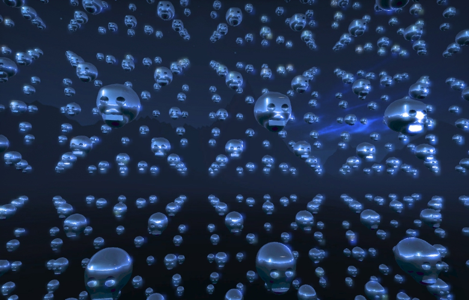 |
| Repeated Skulls |
| CoolAngle2 |
| CoolAngle1 |
| FlyingRings1 |
| 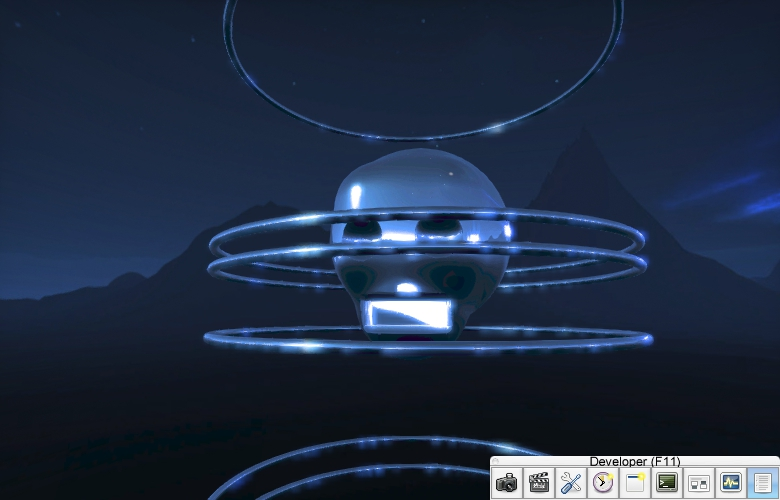 |
| repeatedSkullsFootage1 |
| interesting angle for repeated objects |
 |
| test angle |
TODO tomorrow: Go through and clean up code, add comments describing what each shader is, add melting? Make video.
| test video 2 |
| 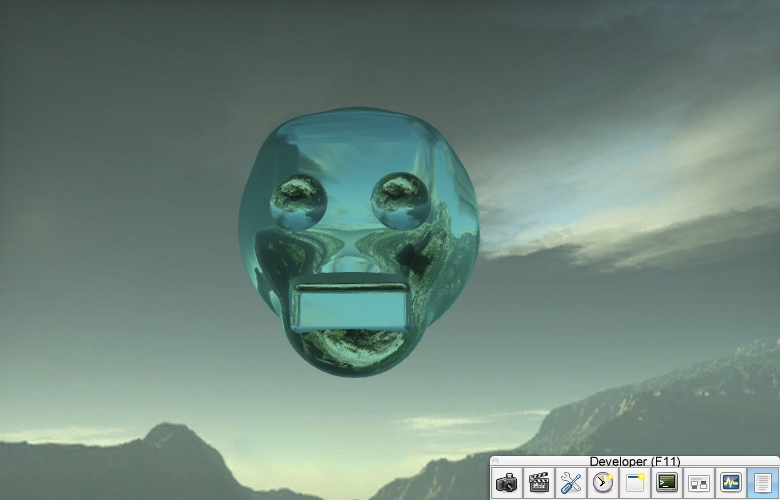 |
| Final skull model |
Open Source music "Ectoplasm" from http://audionautix.com/index.php.
| Manual Pan |
| Playing with Angles |
| Night Scene |
 |
| Closeup |
| 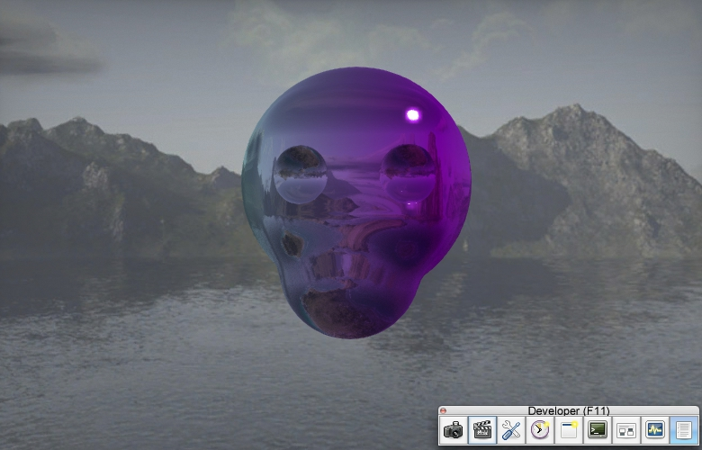 |
| Preliminary Skull |
11:00 pm
| 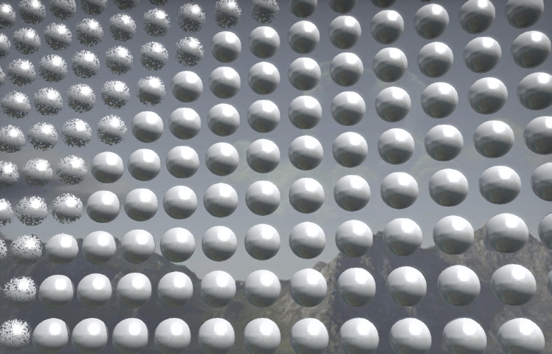 |
| Tiled spheres using two dimensions of vector |
| 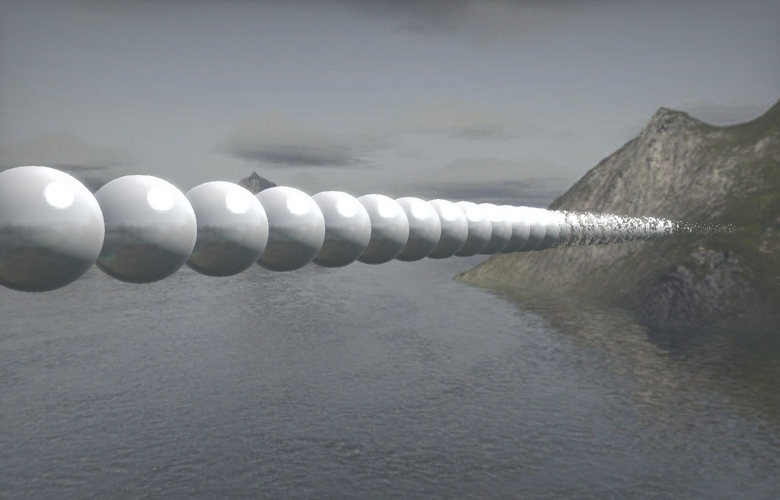 |
| Repetitions in one dimension |
I now have the minimum implementation of the lab with an implicit surface ray tracer, four primitives (sphere, box, cylinder, torus), and three operations(union, intersect, subtract).
 |
| A Torus appears |
| 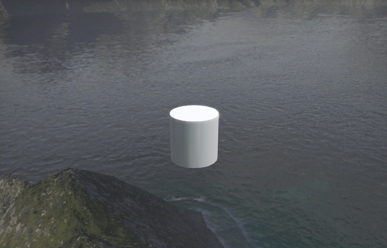 |
| Cylinder appears |
| 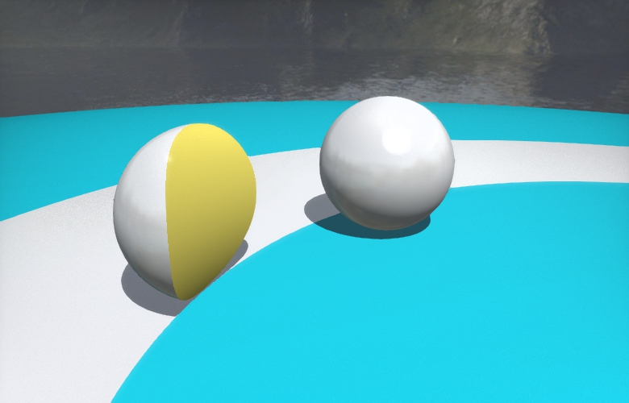 |
| Intersection between Torus and yellow sphere |
| 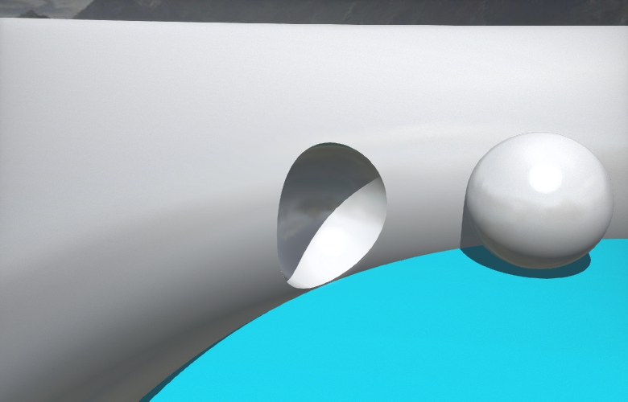 |
| Sphere subtracted from torus |
| 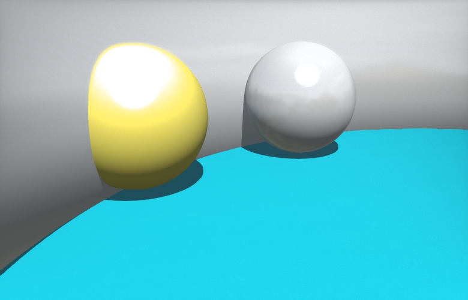 |
| Union is working |
However, there are some errors:
 |
| There appears to be some light bleeding on the edge |
| 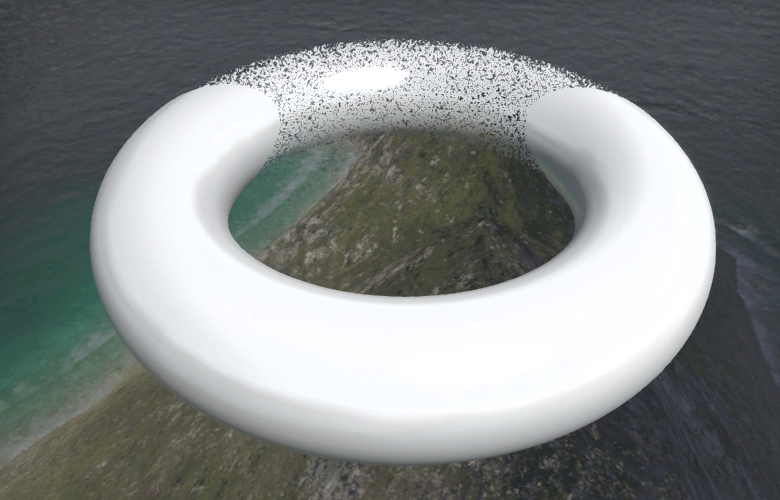 |
| Triangles disappear at a certain distance |
After working for awhile, this is the object i have come up with. it still needs two primitives
 |
| Creepy Cube |
| 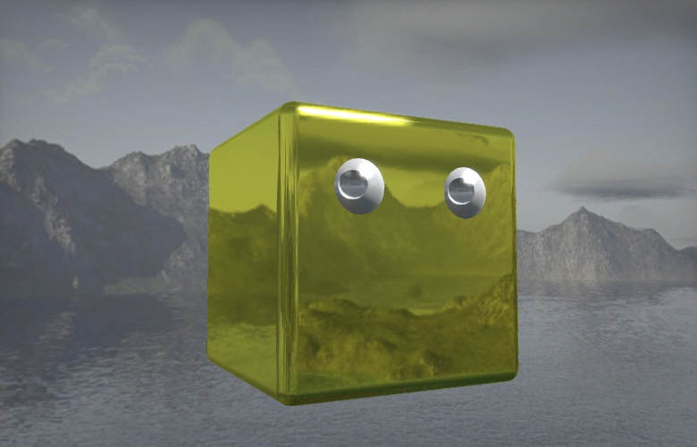 |
| Creepy cube - rounded |
I combined Box, Sphere, Torus, and Cylinder in one file called Primitives.glsl for fewer files to manage.
Plan for tomorrow is to have minimum viable product with Torus, Cylinder and two operators implemented. (Intersection and perhaps repetition). I also need to ask what to do with the ambient illumination and Lambertian BSDFs in the specification.
What I have working right now:
| 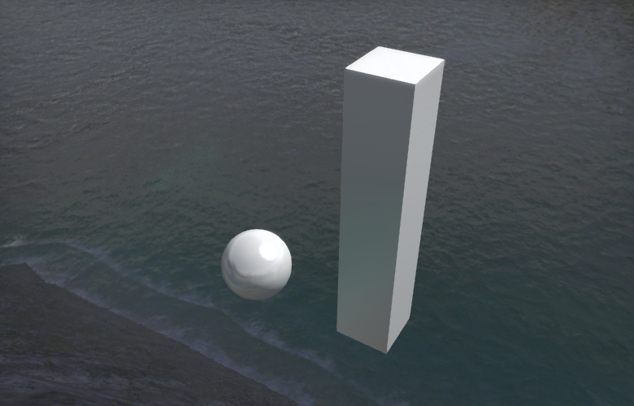 |
| Box primitive working |
Productivity: 2.5 hours
Spent much time today trying to understand the code in the first place. From 5-6 and then 8 - 12.
After referencing a combination of the Javascript ray tracer on codeheart, Morgan's handout on implicit surfaces, and looking at the sample code given to us in Sphere.glsl, trace.pix, trace-analyic.pix, and trace-raymarch.pix, and after a lot of trial and error, we finally got the scenes to render like they looked using the analytic implementation, with shadows.
Sphere:
I implemented the distance estimator for a sphere in sphereDistance function. Spheres and Surfels are structs that are defined with information about location, dimensions, material, the normal vector.
Distance estimator returns a better estimate if it is closer than infinity, and sets the material at that surface according to the material of the object that got intersected.
trace-implicitSurfaces shader:
Implemented unionDistance to find union of two floats.
sceneDistance that takes in a Point3 and a Material to find the union of two surfaces.
sceneDistance that takes in a Point3 and simply calls the prev.
intersectScene is where the actual ray marching happens. We set the maxDistance and the maxIterations for now and we use normals (gradients) to shade the surface properly.
Things to remember:
in, out, and inout determine whether or not you can read or write to a variable.
GLSL cannot pass functions as parameters.
The last error I had was simply that I had
instead of
so my image looked strange.
| 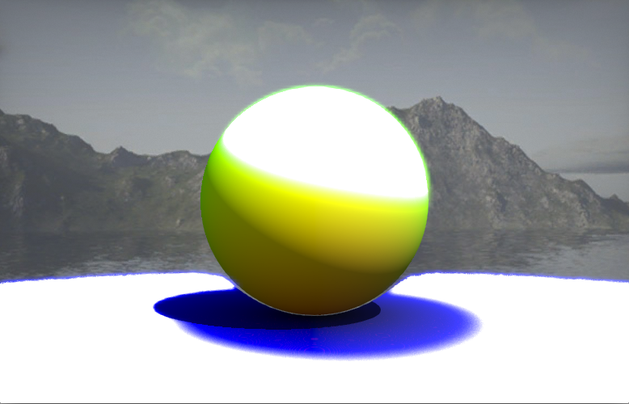 |
| Last incorrect error |
Now this is the result:
| 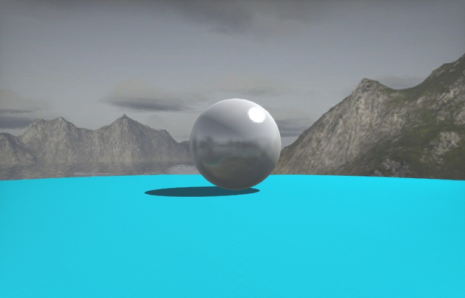 |
| First Working Ray Tracer |
Which looks the same as the analytic version in the code we were given:
 |
| Sphere in Analytic Ray Tracer |
| 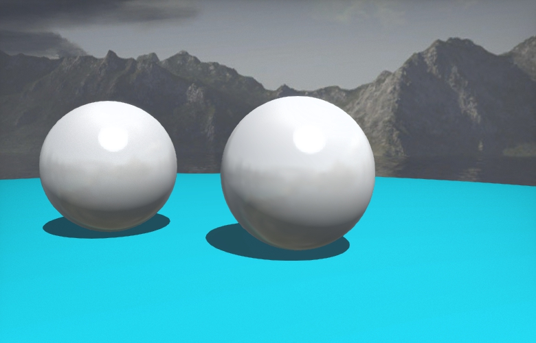 |
| Spheres in analytic ray tracer |
 1.8.9.1
1.8.9.1


{kind=link}
{kind=link}
{kind=link}
{kind=link}
{kind=link}
{kind=link}
{kind=link}
{kind=link}
{kind=link}
{kind=link}
{kind=link}
{kind=link}
{kind=link}
{kind=link}
{kind=link}
{kind=link}
{kind=link}
{kind=link}